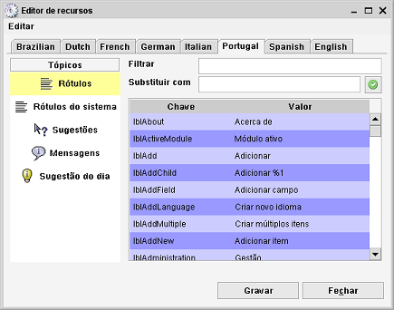

Editor de recursos
Caminho de menu: Definições > Editor de recursos
Pode criar traduções com o editor de recursos.

Há várias categorias de recursos, tais como rótulos e mensagens. Pode optar por editar um dos idiomas disponíveis
ou criar um idioma completamente novo.
Encontrar o texto
Pode filtrar rapidamente o resumo pelo texto que procura, introduzindo texto no campo de filtragem. A cada tecla premida o resumo é
filtrado, mostrando as colunas que contêm o texto que introduziu. Limpar o campo mostra novamente todo o resumo.
Editar recursos
Atualizar um recurso existente é tão simples como escrever um novo valor na tabela (clique no texto e comece a escrever ou
prima a tecla F2 para editar).
Em alternativa, pode usar a funcionalidade Substituir com. Primeiro, escreva no campo de filtragem o texto que quer encontrar.
A seguir, escreva o texto de substituição no campo Substituir com. Clique em  para substituir todo o texto.
Não há nenhum botão para desfazer, no entanto tem a possibilidade de sair do diálogo sem gravar
(clique em Fechar).
para substituir todo o texto.
Não há nenhum botão para desfazer, no entanto tem a possibilidade de sair do diálogo sem gravar
(clique em Fechar).
Clique em Gravar para gravar as alterações que fez.
Criar um novo idioma
Selecione Criar novo idioma no menu Editar do editor de recursos. Introduza o nome do novo idioma e selecione o idioma
em que vai basear a tradução. Basear um idioma noutro já existente signifca que vão ser usados os valores
existentes até que sejam traduzidos.
Certifique-se que grava as alterações antes de fechar o diálogo.